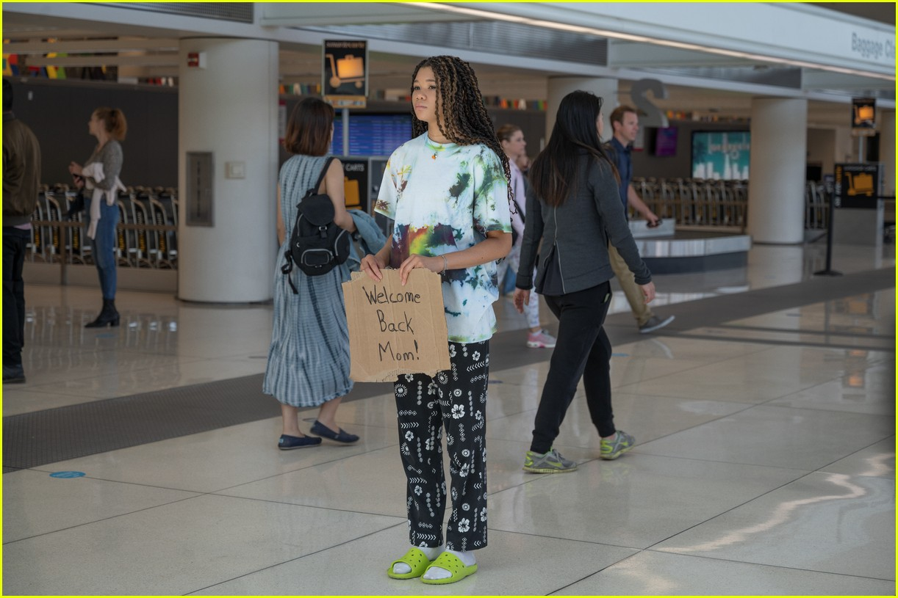
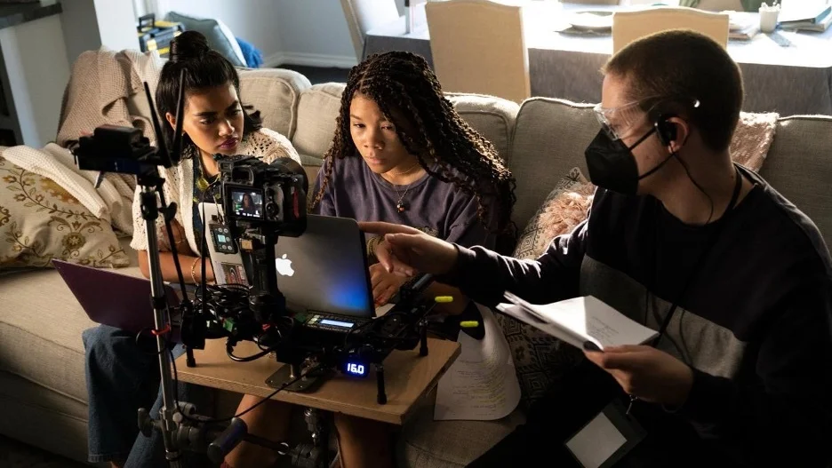

In an archive video, a 6-year-old June Allen is with her deceased father James, who died from a brain tumor shortly after the video was made. 12 Years later, June's mother Grace leaves for a week-long trip to Cartagena, Colombia, with her boyfriend Kevin, leaving a now 18-year-old June in the care of Grace's friend Heather, a divorce lawyer who expresses some jealousy at Grace's relationship with Kevin.
A week later, June is tasked with retrieving her mother and Kevin from Los Angeles International Airport, but they never arrive. When the FBI attache to the consolate are unable to make any headway, June decides to investigate herself using an array of digital tools at her disposal. She also hires Javier, a Colombian gig worker who complies with June's requests for a small fee. Upon hacking into Kevin's Gmail account, June discovers a number of aliases and a criminal record of scamming many women for their money. Believing Kevin to have kidnapped her mother, June has Javier look for clues as to their whereabouts in Colombia. She traces Kevin's past movements to a location in Nevada, where she talks to Jimmy, a man claiming to be a pastor at a Christian rehabilitation center for ex-convicts. He tells her that Kevin has been rehabilitated and is genuinely in love with Grace. June eventually accesses her mother's online dating profile, where past messages reveal that her mother was already aware of Kevin's past.FBI agent Elijah Park informs June that he received footage of a band of criminals seemingly kidnapping Kevin and Grace in Colombia. June unmasks this as a fabricated event, as she discovered Kevin had hired a lookalike actress named Rachel Page to impersonate her mother, who had been kidnapped en route to the airport beforehand. As the case makes national headlines, Rachel confesses she was unaware of Kevin's intentions when she accompanied him to Colombia. It is later revealed that Grace has had multiple aliases as well, sparking speculation that she had something to do with her own disappearance. Swearing by her mother's innocence, June's suspicions fall on Heather when she discovers an encrypted line of communication between her and Kevin. June sneaks into Heather's office but finds it ransacked and with files deleted. She then discovers Heather's corpse in a storage closet.
Later, June views live footage of a police raid in Colombia focusing on Kevin, who is shot and killed despite surrendering. Seemingly at a dead end, June is about to give up but manages to access her mother's e-mail. She finds a threatening e-mail directed at Grace, which leads her to discover security cameras that Kevin bought to install at an abandoned house, which happens to be her old vacation home in Nevada. Just then, Jimmy calls June and indicates he has some information about Grace.
Jimmy arrives and reveals that he is June's father. He claims that Grace was emotionally unstable and took June away from him after having him arrested under false charges. However, when he unwittingly reveals he was in the same prison around the same time Kevin was incarcerated, June realizes he was the one who set the whole thing up. It is later revealed that James was a domestic abuser whose drug habit endangered all of them; Grace and Heather had told June he died of cancer to shield her from the truth. James sought revenge by enlisting Kevin, whom he met in prison, to pose as a prospective boyfriend so he could find Grace and June.
James kidnaps June and takes her to the old house, where Grace is also detained. They reunite before Grace is shot by James. James tries to leave with June, but Grace fatally stabs him in the neck with a shard of broken glass. June, realizing James never shut off her laptop when he kidnapped her, uses the cameras to tell Siri to call the police. Several months later, Grace has survived her gunshot wound, and June is in college. Their story has been adapted on the true crime show Unfiction, and Grace has started a friendship with Javier after June introduced them. June texts her mother that she loves her, and Grace responds that she loves her too.